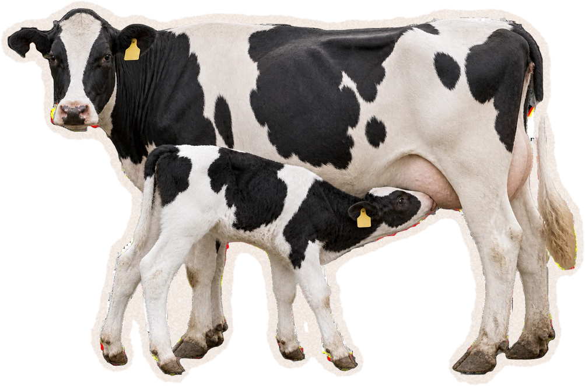
Krabice mléka
z obchodu
začíná porodem.
z obchodu
začíná porodem.
Mléčné chovy · Česko
Do 12 h
na 87,5 % českých farem
V praxi často: hned
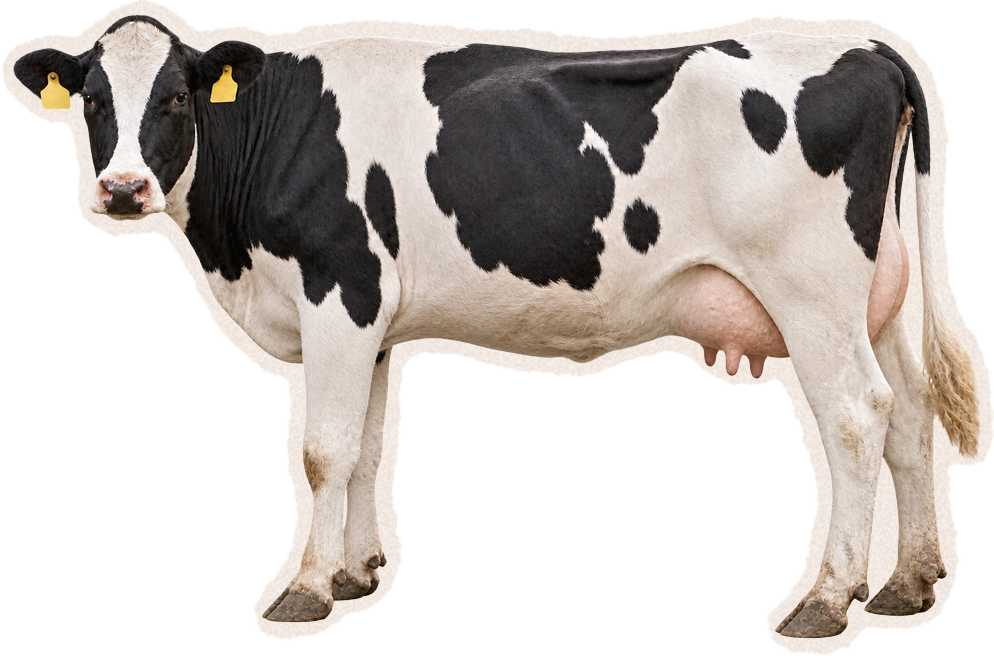
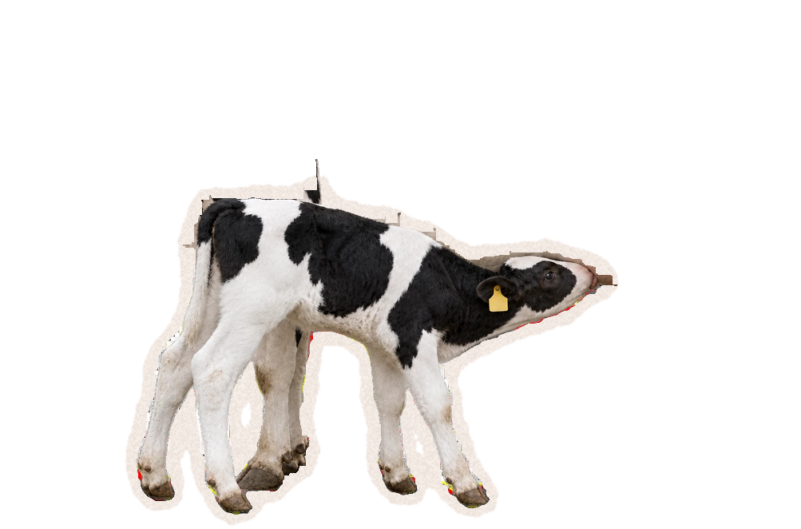
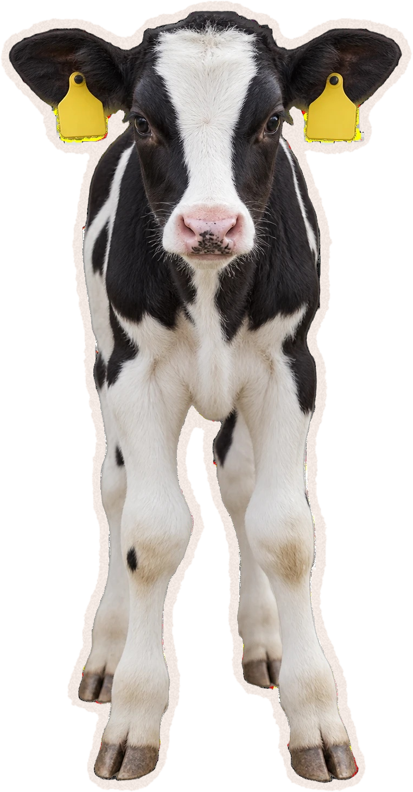
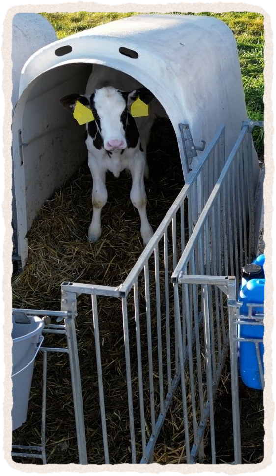
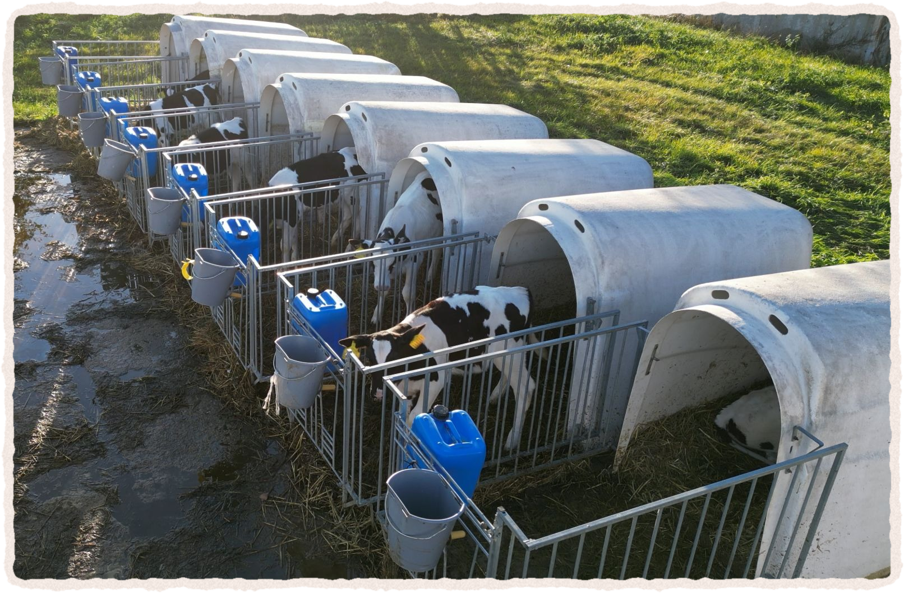
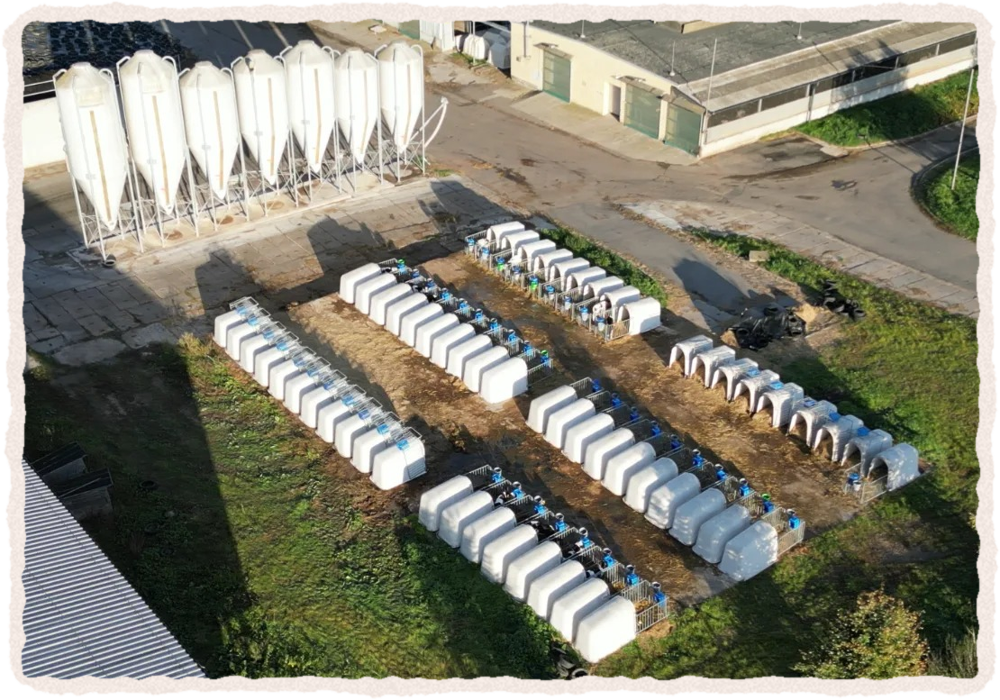
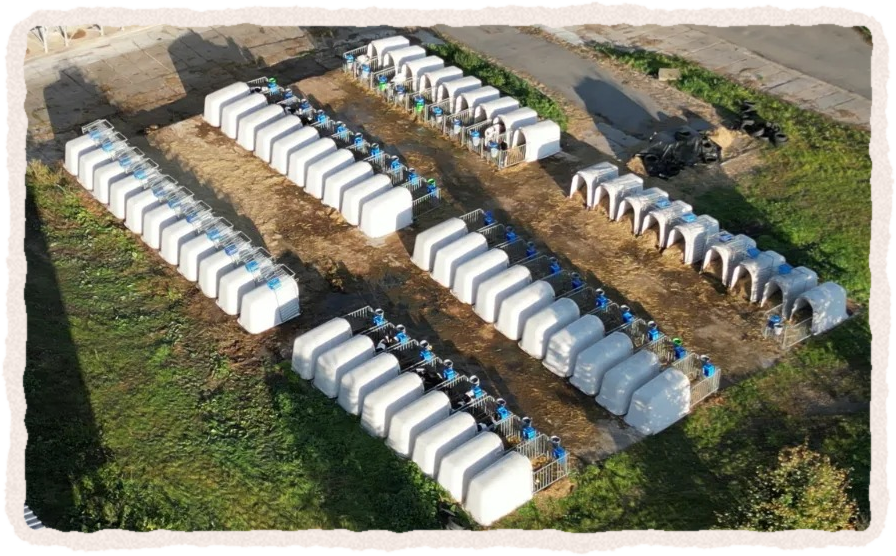
Desítky boxů, v každém
jedno tele bez mámy
jedno tele bez mámy
Samostatný box · často až 8 týdnů
Společenské zvíře
Ať hned, nebo později,
Oddělit mládě
od matky je
kruté.
od matky je
kruté.
Proč se to dělá?
Několik argumentů
4 nejčastější
1Hygiena
2Zalehnutí
3Pouto
4Přebytek mléka
1Hygiena
Společná porodna
Společná porodna: 2/3 farem
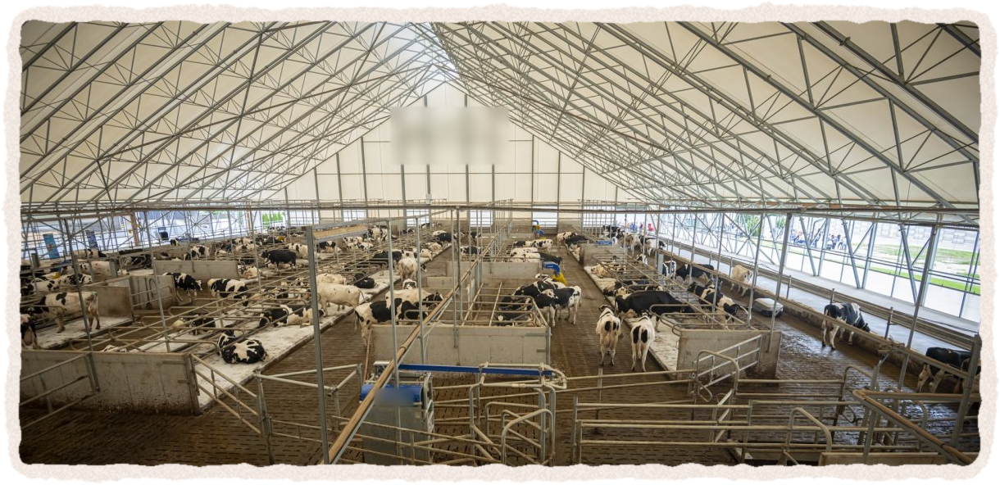
Velkokapacitní hala
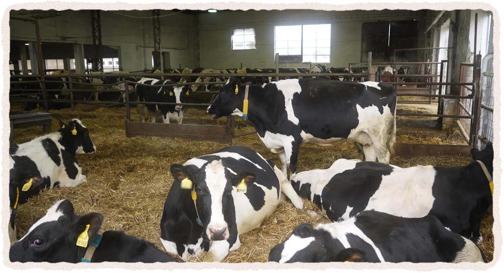
Velkokapacitní hala
Spousta krav pod jednou střechou
Výkaly + moč = bakterie
Přehledy studií · Beaver et al. 2019 · K. Bučková (VÚŽV), Náš chov 2020
Přínos časného oddělení pro zdraví telat je ve studiích nejednoznačný
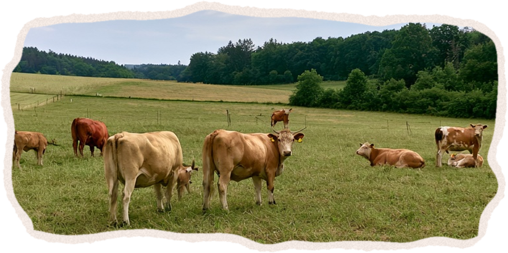
Tzv. masné krávy:
telata s matkami měsíce
telata s matkami měsíce
Problém
Přeplněná, špinavá hala
Řešení
Víc prostoru a úklid
Odebrat tele
2Zalehnutí
Hodně zvířat, málo prostoru
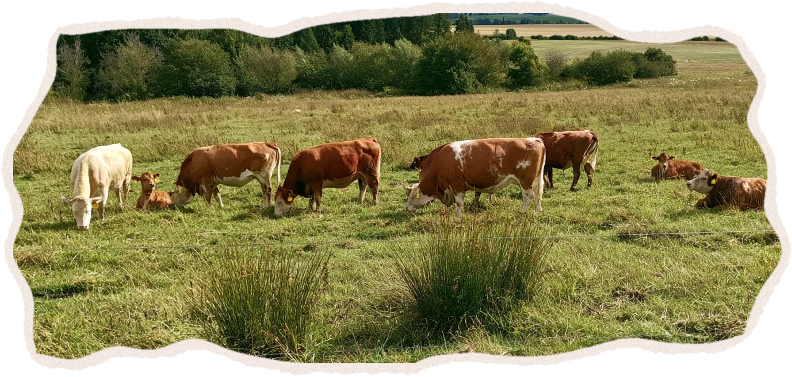
Tzv. masné krávy: prostor
Problém
Málo prostoru
Řešení
Víc prostoru
Odebrat tele
3Pouto
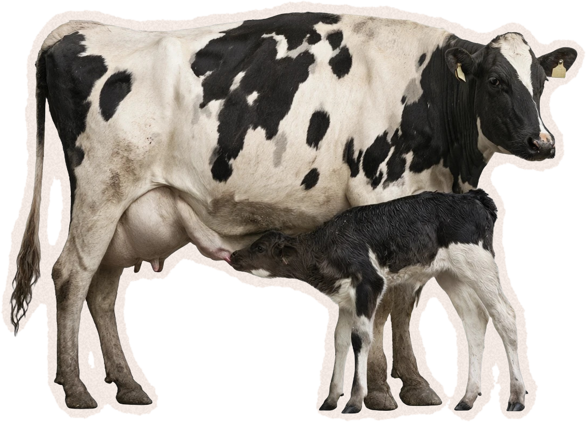
Mateřské pouto
Reakce na odloučení (chování) · schéma
Podle výzkumů
S mámou déle:
rychlejší růst, víc společenské
rychlejší růst, víc společenské
Předpoklad: stejně je rozdělí
Takže aby je odloučení nebolelo,
odloučí je dřív.
Není to bizarní důsledek systému?
4Přebytek mléka
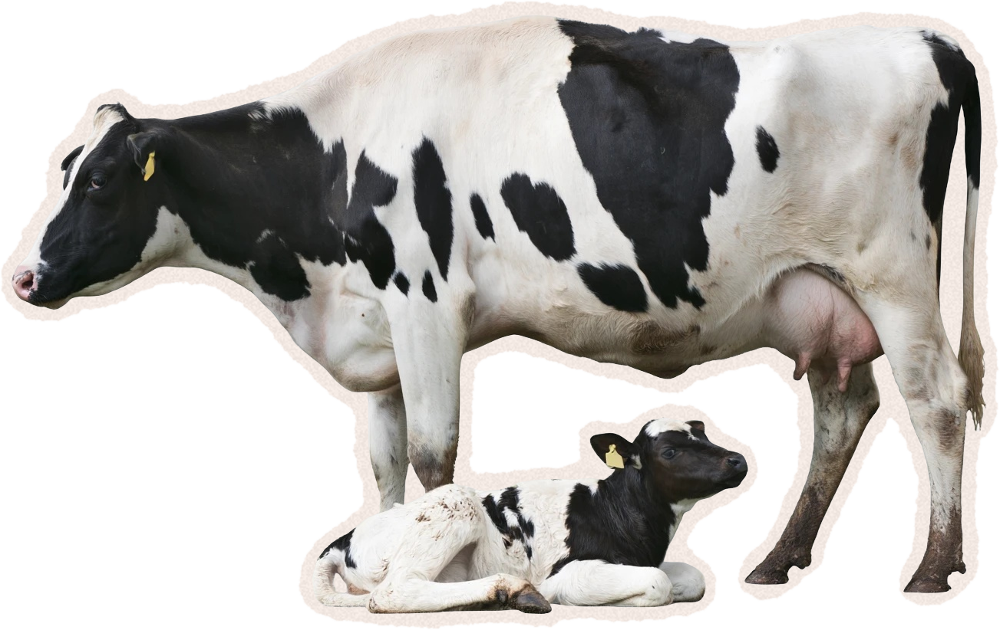
Pro tele
„Tele by to nevypilo“
Šlechtění na co nejvyšší výkon
Dojivost · Česko · litrů na krávu za rok
3 982
9 574
Tele: ~8–15 l denně
Tzv. dojnice: ~30 l denně
Tzv. dojnice: ~30 l denně
Problém není tele.
Mašina na mléko
Bizarní kruh
Velkokapacitní
hala
hala
Málo místa,
výkaly
výkaly
Přešlechtěné
krávy
krávy
Nákazy, zalehnutí,
přebytek mléka
přebytek mléka
„Nutné“
oddělení
oddělení
Krutá praxe
= „nutnost“
„Šetrnější“ chov? Pořád využívání.
Jedna studie · mléčné farmy · 6 zemí Evropy
104
farem: tele s matkou
nebo kojnou 7–305 dní
nebo kojnou 7–305 dní
✓ krávy se dojí a telata přitom sají
Přebytek mléka = výmluva
Okamžité oddělení nutné není.
ani z pohledu chovatelů
Ani tady nehledejte útěchu
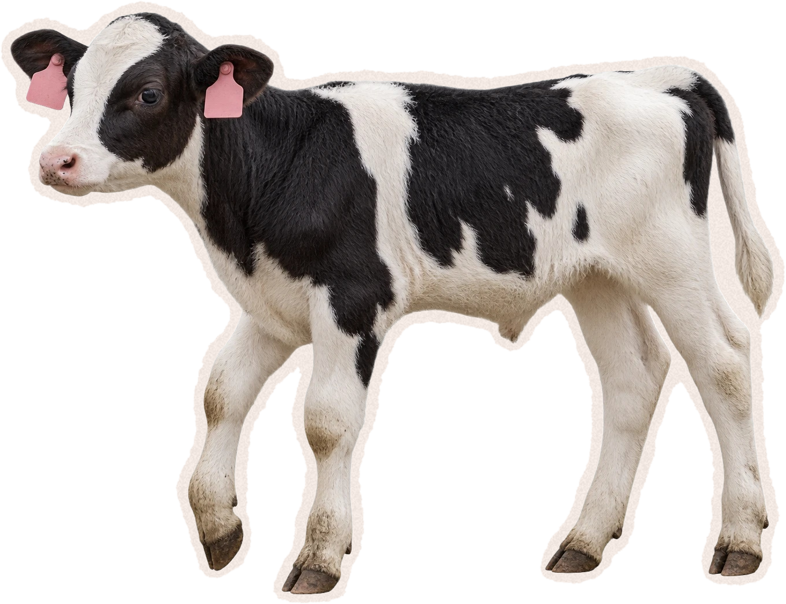
Býčci
nedávají mléko
Jatka
Krvavý a krutý byznys
jen možná o trochu lepší
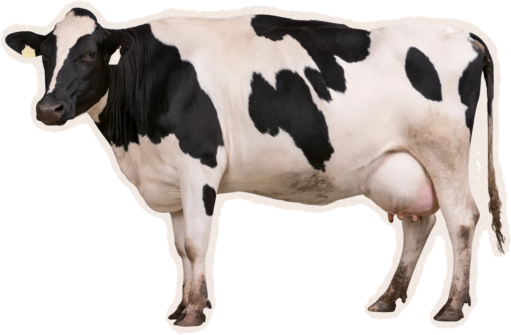
Tzv. dojnice
nemoc, neplodnost, nízký výkon
ČR: vyřazena průměrně ve 3.–4. laktaci
Jatka
Zvíře není
stroj ani zboží.
stroj ani zboží.
Nabídka a poptávka
Poptávka
Nabídka
Kupujeme
Rostlinné alternativy
Kolektiv pro zvířata
www.kolektivprozvirata.cz
Zdroje v popisku